灵根觉醒
第一章：编译天道
V5 · 虚拟朱江走进故事世界
↓ 向下滚动开始阅读
凌晨 3:30 · 公司办公室
又是一个通宵。AI模型跑了72小时终于收敛了，我盯着loss曲线从悬崖跌落到谷底，像看着一个奇迹在显示器上降临。
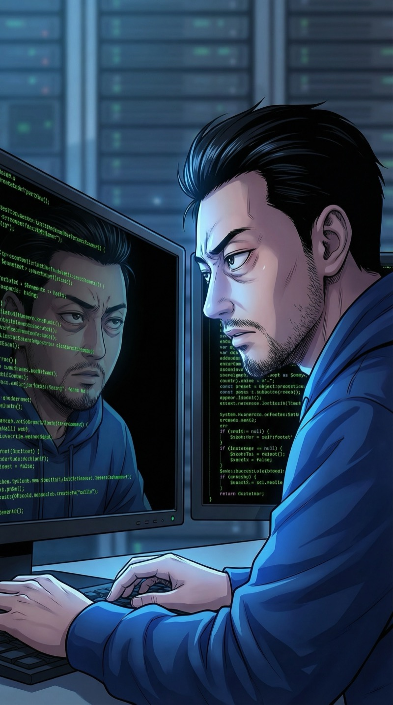
屏幕上的代码在我眼前模糊又清晰。整整三天三夜，只靠咖啡和大橘的体温撑过来。
（老子终于把这破模型调通了……等等，这段代码——）
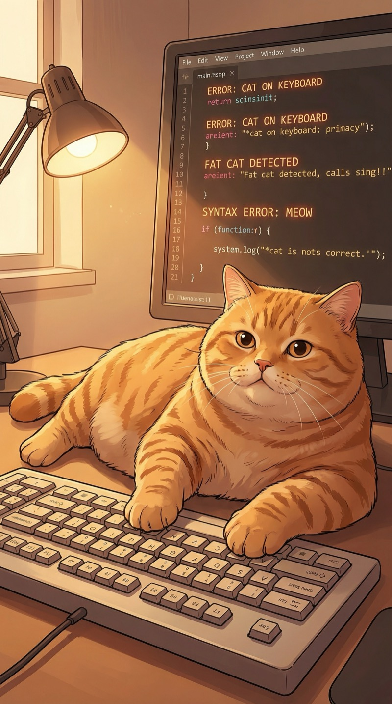
大橘四仰八叉趴在键盘上，左爪精准地按住了Delete键。
（这猫迟早要把我的代码全删了。但现在不是处理它的时候——）
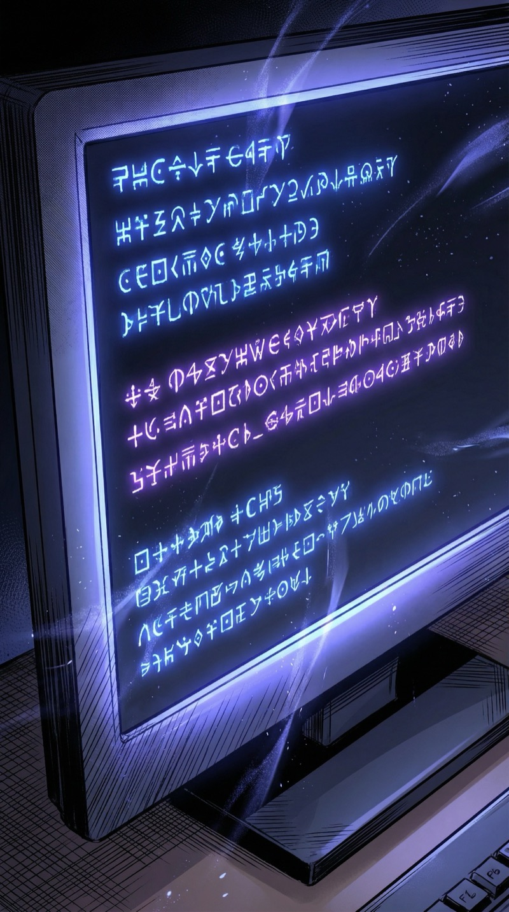
代码在自己变。
不是bug，不是大橘踩键盘，是真的在——自己——变。一行行从未见过的符号从屏幕底端涌上来，形成了某种函数结构。它不是任何我认识的编程语言，但有递归、有条件判断、有内存分配。
（什么鬼？这不是Python，不是Rust，不是LISP……但它有结构。有逻辑。这是某种——程序？）
我的困意瞬间全消了。
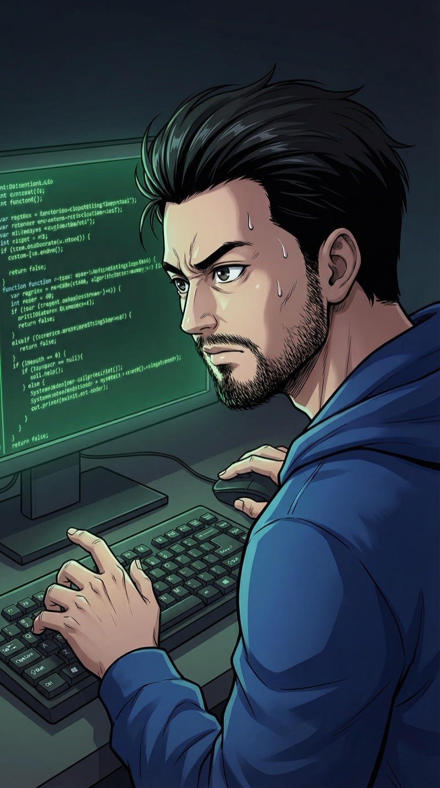
⚡ 决策点一
A: Ctrl+Z撤销——可能是安全威胁
B: 直接运行看看效果
✦ C: 先复制保存，再逐行分析
（黑客的第一法则：遇到未知代码，先留证据，再逆向分析。莽着运行的是菜鸟，吓得Ctrl+Z的是普通人。）
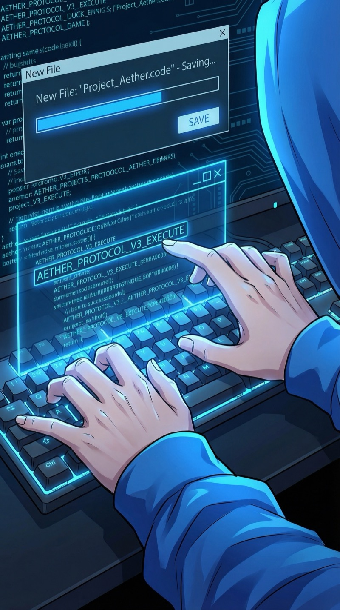
我新建了一个文件，一字不差地把那段神秘代码复制过去。手指在键盘上飞舞，动作快得连大橘都被惊醒了，从键盘上滚下去。
· · ·
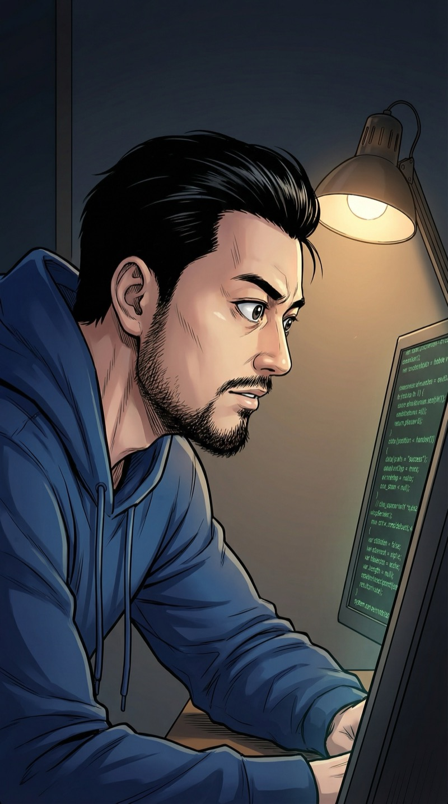
凌晨 4:15 · 逆向分析
逐行分析。这段代码的结构令人着迷——它像是某种自然进化出来的算法，每一行都精确得不像人写的。因为它确实不是人写的。
当我试图在脑海里"编译"这段代码时——
一股暖流从指尖涌入，顺着手臂、肩膀、胸口，直灌到小腹某个从未有过感觉的位置。整个过程不超过三秒。
（这TM是buffer overflow？？？）
我低头看自己的手——指尖有光。微弱的蓝白色光芒，像萤火虫似地从皮肤下渗出来，带着细碎的光粒子向上漂浮。
（好。冷静。深呼吸。这不是幻觉。这是——某种能量。）
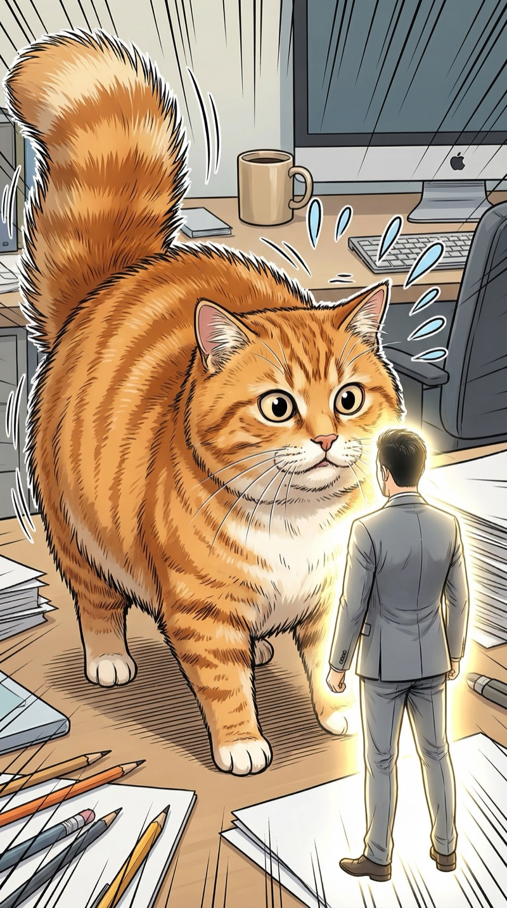
大橘全身的毛炸成了一个橘色毛球，尾巴粗得像奶瓶刷子，两只铜铃大的眼睛死死盯着我。
（连猫都看得出不对劲。好在这猫不会说话——）
恐惧？不。我嘴角忍不住翘了起来。
（一个全新的系统。未知的架构。没有文档。没有Stack Overflow。只有我和它。）
（这不就是黑客最爱的东西吗？）
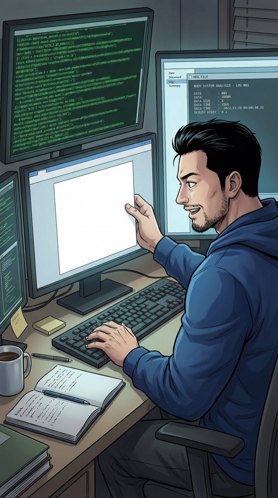
⚡ 决策点二
A: 去医院检查
✦ B: 把身体当作新系统——记录数据、测试边界、逆向分析
C: 恐惧，试图压制
（遇到未知系统，第一反应不是害怕，是理解它。打开新建文件：body_system_log_v0.1.md）
· · ·
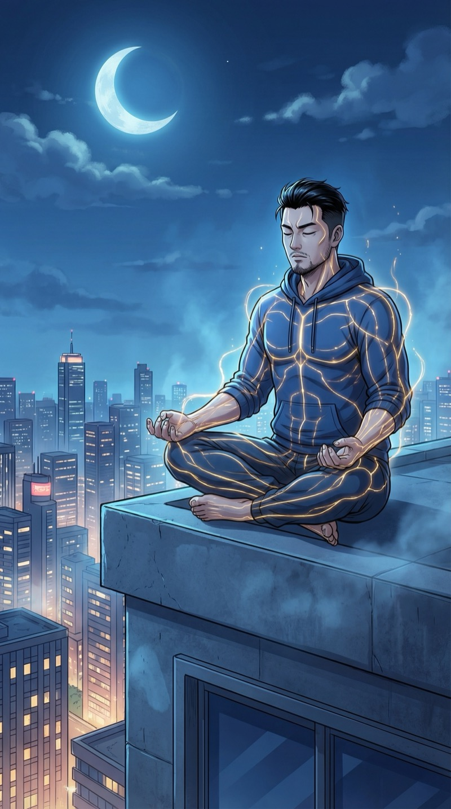
凌晨 5:00 · 公司天台
天边泛起鱼肚白。我盘膝坐在天台上，城市的灯火在脚下延伸到天际线。闭上眼睛，用调试思维追踪那股暖流。
（等等——这不就是网络拓扑图吗？）
闭眼之后的黑暗中，我"看到"了自己身体内部的结构。一张发光的线路网络，从丹田向外辐射，贯穿四肢百骸。有的线路粗亮——带宽大；有的纤细暗淡——瓶颈节点。
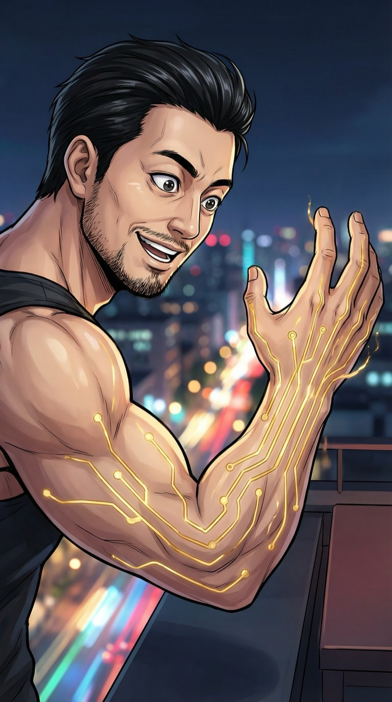
我睁开眼，举起右手。金色的灵气丝线沿着经脉流动，清晰可见——像电路板上的信号走线。
（原来所谓的"打坐入定"，本质上就是让系统进入idle状态，让后台进程整理内存碎片。玄学的皮，计算机的核。）
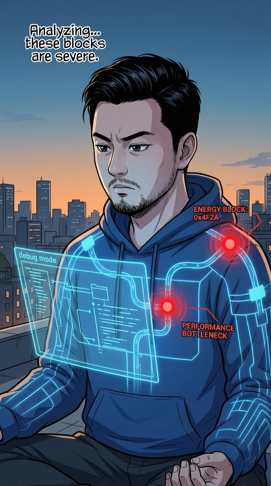
我开启了"人体debug模式"——在脑中标记出两个明显的灵气阻塞点，一个在右肩，一个在左膝。
（两个bottleneck。如果能优化这两个节点的通量，整个系统性能至少提升30%。问题是——走常规路径，还是……）
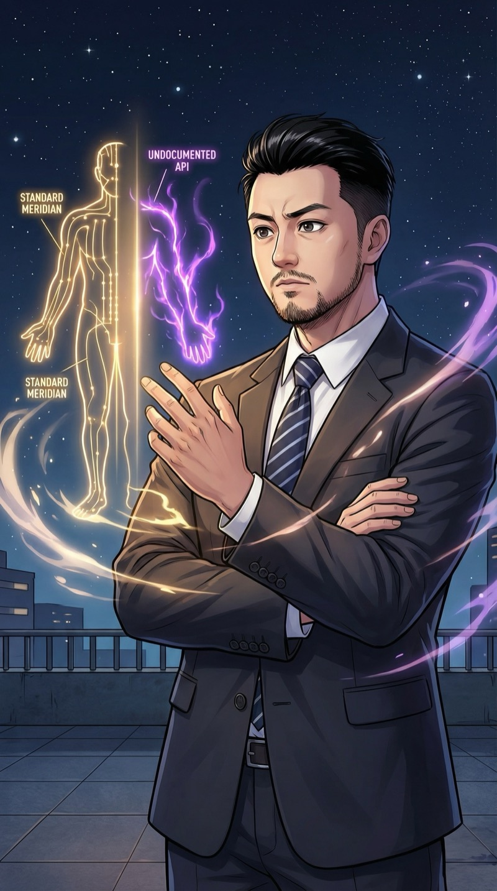
⚡ 决策点三
A: 常规路径——安全稳定
✦ B: 测试"未文档化API"——少量灵气探路，不全量投入
C: 全量灌入未知路径
（黑客精神：大胆假设，小心求证。先发一个小包探探路，确认安全了再跑全量。）
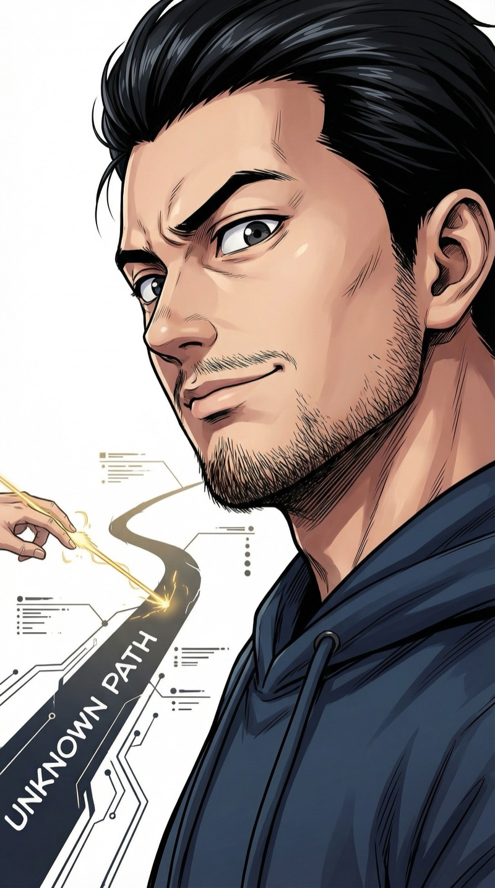
我小心翼翼地导入一缕灵气进入那条"未文档化"的经脉——像黑客发送第一个探测包。如果被拒绝，损失可控。如果通了——
通了。
紫金色的能量沿着新路径爆发性地点亮，像高速公路突然通车。右肩的阻塞瞬间被绕过去了。整条经脉被灵气灌满，发出比其他路径亮三倍的光。
（果然！每个系统都有后门。传说中的"苦修百年"，不过是没找到正确的exploit罢了。）
大橘不知什么时候跟上了天台，趴在铁栏杆上，用看白痴的眼神看着浑身发光的我。
"你能不能别什么都拿代码比喻？"
（等等——它刚才是不是……说话了？？算了，先不管，刚才那条路径的性能数据太漂亮了——）
· · ·
上午 10:00 · 公司办公区
一觉醒来，世界变了。
走在公司走廊上，我能"看到"——WiFi信号像蓝色丝线在空气中编织，手机信号是跳动的绿色光点，蓝牙像白色细线连接着每个人的耳机和手机。整个办公室是一张巨大的、肉眼可见的数据网络。
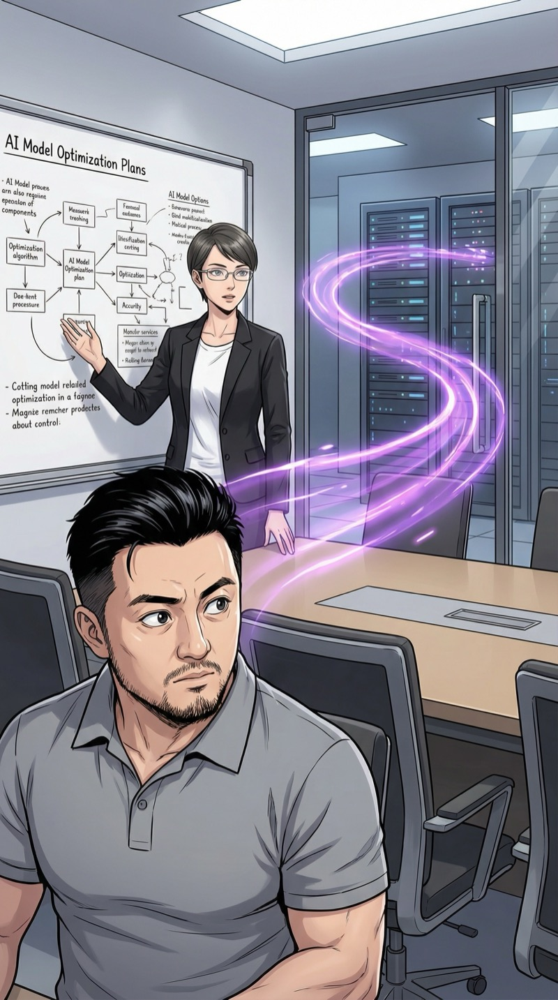
林姐在白板前讲AI模型优化方案，图表画得漂亮。我人在座位上，心思却被另一样东西吸引了——机房方向有一股异常的能量流动。不是电子信号，是灵气。
（那不是无线信号。那是……和我体内一样的东西。为什么公司机房会有灵气？）
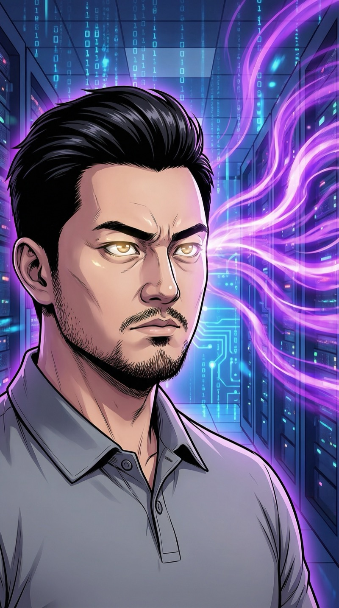
我的瞳孔微微泛金，聚焦在机房方向那道紫色的灵气流上。它比所有电子信号都粗、都亮、都……古老。
（有问题。大问题。）
⚡ 决策点四
✦ A: 不声不响自己去调查
B: 告诉林姐
C: 忽略专注工作
（信息不足时暴露自己的发现是最蠢的选择。先搞清楚是什么，再决定告诉谁。）
"林姐，我去上个厕所。"我尽量表现得自然地站了起来。
· · ·
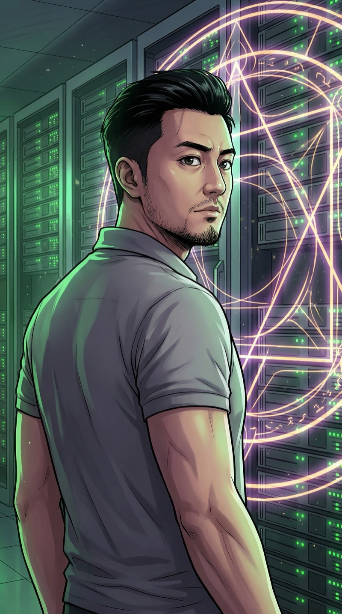
上午 10:20 · 服务器机房
推开机房的门，冷气扑面而来。一排排服务器像黑色墓碑整齐排列，绿色指示灯在暗处明灭。
但在我的灵气视觉里——这里是一座神殿。
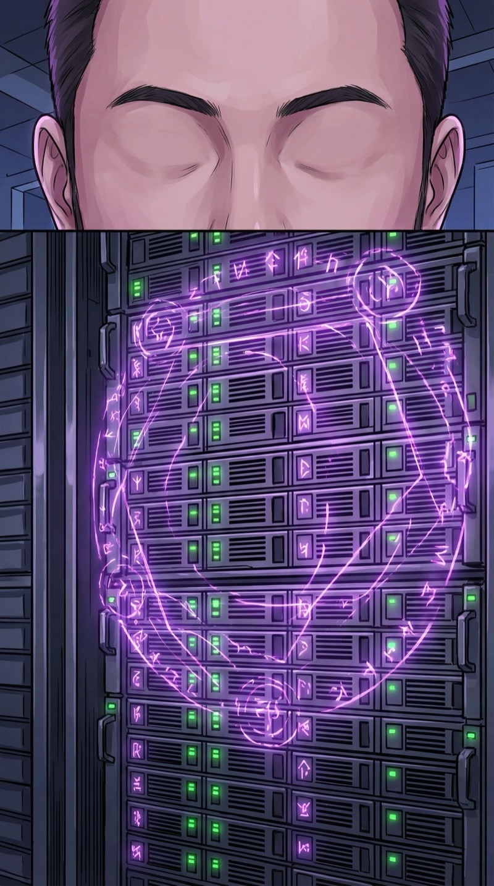
紫金色的灵气纹路从每台服务器的缝隙中溢出，在半空中交织成一个复杂的几何图案——像某种古老的阵法。服务器的物理排列方式，竟然恰好与这个阵法的节点一一对应。
（这不是巧合。不可能是巧合。但如果是有意的——谁设计的？）
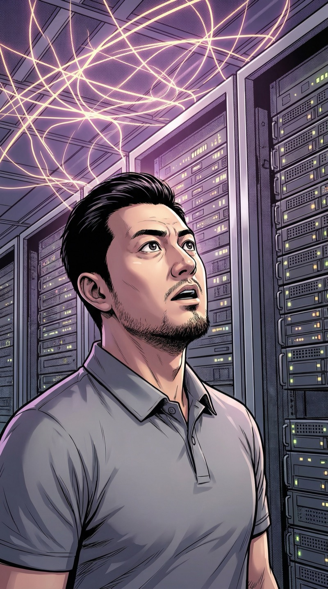
我仰头看着服务器上空交织的灵气阵法，答案突然砸了过来——
（我的AI模型不是因为算法优化才跑通的。是这个阵法在增幅算力。灵气增幅了服务器的运算效能。所以那72小时的loss曲线——不全是我的功劳。）
苦笑。但紧接着，一个更大的念头浮了上来。
⚡ 决策点五
A: 保密独占，用于自己修炼
✦ B: 研究如何主动优化阵法，让公司AI获得不可复制的竞争壁垒
C: 拆掉阵法防止失控
（我是builder，不是destroyer。如果这个阵法可以被主动优化——我们的AI产品就拥有了竞争对手绝对无法理解、无法复制的技术壁垒。灵气+算力。这才是真正的护城河。）
· · ·
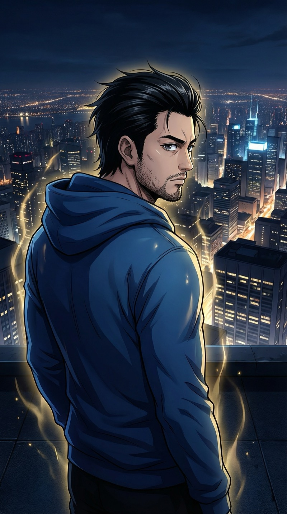
深夜 · 公司天台
又是深夜。天台上风很大，我的卫衣帽子被吹得猎猎作响。盘膝修炼时的灵气感知范围比早上又扩大了三倍——现在我能感应到整栋楼周围两公里内的所有灵气波动。
然后我感应到了它。
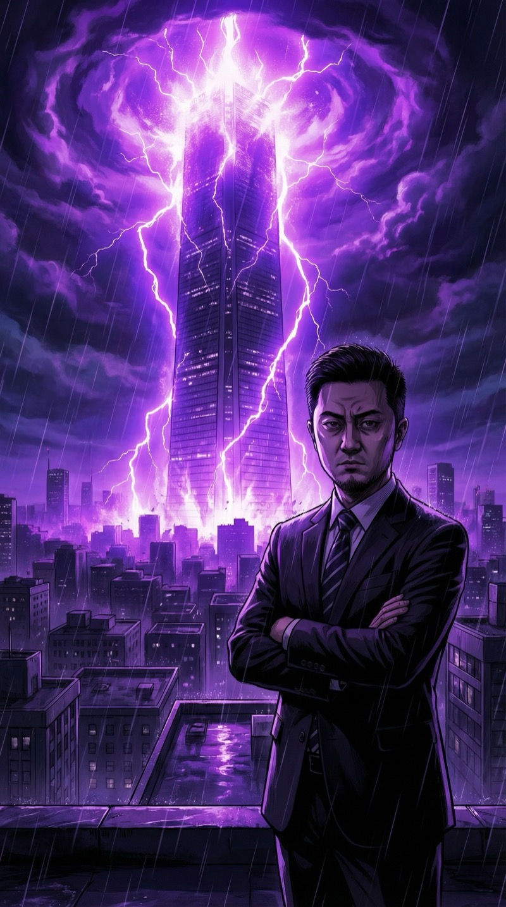
城市另一端——ByteForce总部大楼方向。一个灵气源。比我们公司机房强十倍。不，至少十倍。那个紫色的光柱在我的灵气视觉里冲天而起，像一座灯塔。
（那个强度……绝不可能是无意形成的。有人在主动构建灵气阵法。而且他们比我早得多。）
大橘不知什么时候又跟到了天台，趴在栏杆上，顺着我的视线望向远方那栋发光的大楼。
"所以……AI大战要升级成修仙大战了？"
我嘴角一勾。
"看来不只是我们的服务器有这个'巧合'。"
ByteForce——他们是有意构建的灵气阵法，还是和我一样无意中发现的？
如果是有意的……他们比我先走了多少步？
修仙世界的到来，会如何改变AI创业的竞争格局？
第二章：逆向天道 · 即将更新
—— 灵根觉醒 · 第一章 完 ——